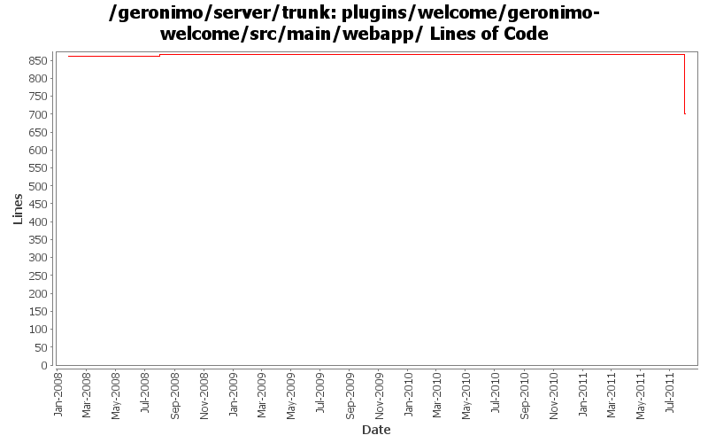

[root]/plugins/welcome/geronimo-welcome/src/main/webapp
 WEB-INF
(2 files, 66 lines)
WEB-INF
(2 files, 66 lines)
 images
(3 files, 511 lines)
images
(3 files, 511 lines)

| Author | Changes | Lines of Code | Lines per Change |
|---|---|---|---|
| Totals | 20 (100.0%) | 383 (100.0%) | 19.1 |
| rwonly | 8 (40.0%) | 359 (93.7%) | 44.8 |
| linsun | 1 (5.0%) | 12 (3.1%) | 12.0 |
| genspring | 1 (5.0%) | 5 (1.3%) | 5.0 |
| jbohn | 3 (15.0%) | 4 (1.0%) | 1.3 |
| dwoods | 4 (20.0%) | 2 (0.5%) | 0.5 |
| xiaming | 3 (15.0%) | 1 (0.3%) | 0.3 |
some codes clean up
1 lines of code changed in 1 file:
GERONIMO-6059 New look and feel of Geronimo 3.0 admin console (Step 2, New UI design)
357 lines of code changed in 6 files:
GERONIMO-5895 fix variant accessibility issues, patched by Shenghao Fang
1 lines of code changed in 3 files:
modify the copyright year in geronimo-welcome's index.jsp
1 lines of code changed in 1 file:
GERONIMO-4977 Geronimo EN/Simp.Chinese UI information improvement for Console, thanks Jeff for the patch !
5 lines of code changed in 1 file:
updated displayed copyright dates for 2009
1 lines of code changed in 1 file:
update the instruction to replace the default welcome page
12 lines of code changed in 1 file:
merge 676738 from branches/2.1 - GERONIMO-4208 Eliminate individual sample references from Geronimo Welcome Page
4 lines of code changed in 1 file:
GERONIMO-4025 Accessibility issues. Applied GERONIMO-4025-activemq-and-monitoring.patch from Rex.
0 lines of code changed in 2 files:
GERONIMO-4081 Accessibility issues. Thanks Ivan for the patch.
1 lines of code changed in 1 file:
fix some typos in welcome page and eliminate reference to never released installer
0 lines of code changed in 2 files: